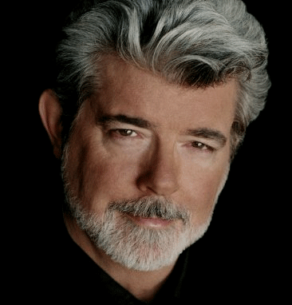

Lucasfilm has trademarked the term “Star Wars” (U.S. Registration No. 1127229),
which was issued December 4, 1979. Additionally, many Star Wars characters have
been trademarked, including R2-D2, Darth Vader, Luke Skywalker, Princess Leia Organa,
Ben (Obi-Wan) Kenobi, and Chewbacca.
The Disney Group takes Disney trademark infringement seriously and has copyright
and trademark registrations to protect its characters. Anyone who wants to use the
characters from the Disney franchise must follow all legal
requirements to avoid infringing on the company's intellectual property rights.